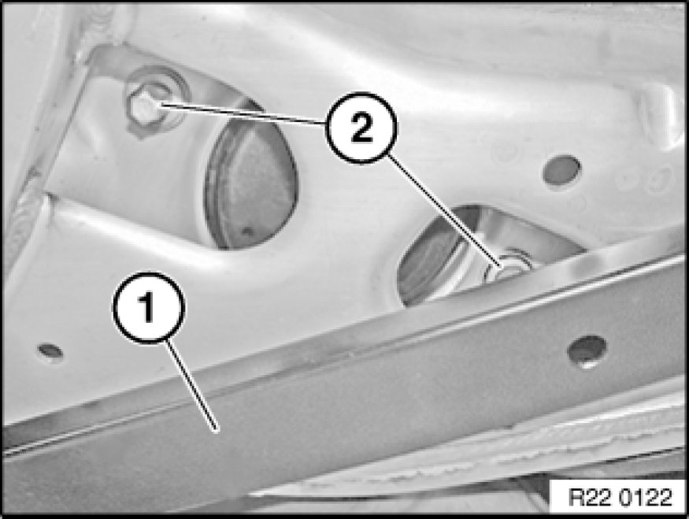
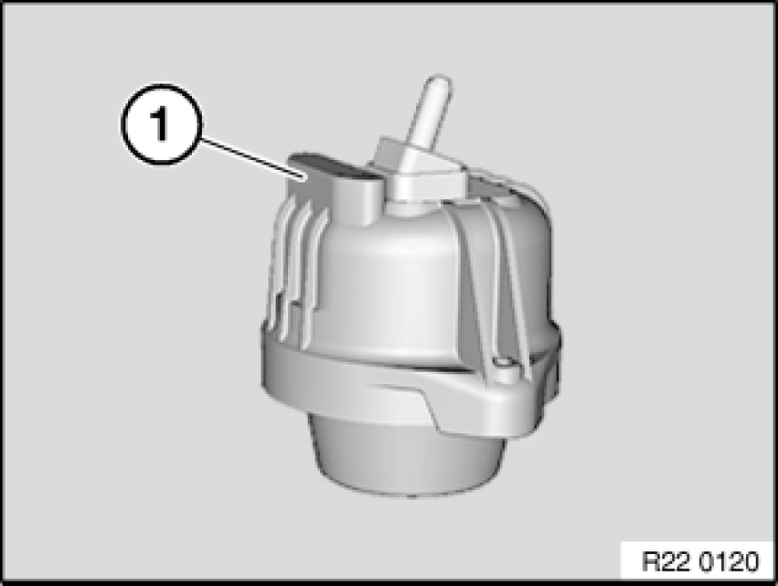

Replacing Left Engine Mount
22 11 011 - Replacing left engine mount (N51/N52/N52K/N53)

Necessary preliminary tasks:
- Secure engine in installation position Securing Engine In Installation Position.
- Remove underbody protection.
- Remove reinforcement strut (E90/91/92).
- Remove left V-strut (E93 and E88 only).

Release screws (2) and remove engine mount.
Tightening torque 22 11 1AZ Specifications.
Note:
Illustration similar

Installation:
Rubber section (1) of engine mount must point to middle of vehicle.
Engine mount designations:
Right engine mount
- Even component number
Left engine mount
- Odd component number